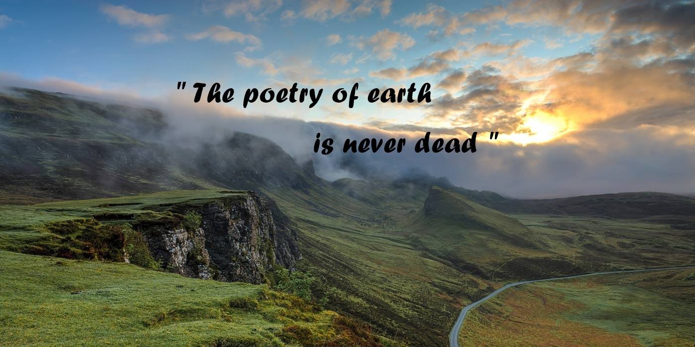
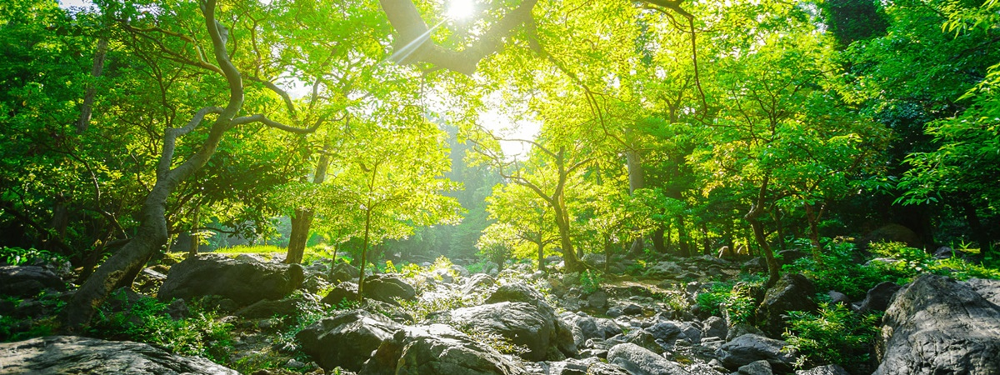

EnvironmentInfo
Environment
The natural environment, commonly referred to simply as the environment, is a term that encompasses all living and non-living things occurring naturally
on Earth or some region thereof.
The concept of the natural environment can be distinguished by components:
- Complete ecological units that function as natural systems without massive human intervention, including all vegetation, animals, microorganisms,
soil, rocks, atmosphere and natural phenomena that occur within their boundaries.
- Universal natural resources and physical phenomena that lack clear-cut boundaries, such as air, water, and climate, as well as energy, radiation, electric
charge, and magnetism, not originating from human activity.
The natural environment is contrasted with the built environment, which comprises the areas and components that are strongly influenced by humans. A geographical
area is regarded as a natural environment (with an indefinite article), if the human impact on it is kept under a certain limited level.


Importance
Environment is the key for existence of life on the earth. Without it, there can be no life on earth.
The importance of environment :
- To have a healthy life we need fresh air, clean water, and surrounding
- Soil is one of the component of environment
- It is useful for the growth of plants which are source of food to the animals around
- Food materials are obtained from plants, animals and other natural sources
- The clothing requirements like wool, cotton are obtained from plants and animals
- We obtain many medicines from the nature which cause no side effects than artificial drugs
The natural environment is a free gift of nature and we need to conserve it for
the benefit of life in future. So it's our responsible to take precautions against the pollution.
The environment is an important issue even when society is faced with economic crises, wars, and unending social problems.It matters because Earth is the only home that humans have, and it provides air, food, and other needs.
Today the world is facing from a lot of environmental crises due to human activities.In oher words these crises are known as Environmental Pollution
International Organizations Working for Environment
- Earth System Governance Project (ESGP)
- Global Green Growth Institute (GGGI)